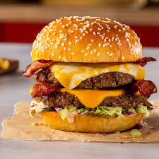

Ingredients
- 1 lb ground beef
- 4 hamburger buns
- 4 slices cheddar cheese
- 1 large tomato, sliced
- 1 onion, sliced
- Lettuce leaves
- Pickles
- Salt and pepper to taste
- Ketchup and mustard
Requirements
- Grill or skillet
- Spatula
- Knife
- Cutting board
Description
- Preheat grill or skillet to medium-high heat.
- Form ground beef into 4 patties. Season with salt and pepper.
- Cook patties on the grill or skillet for 4-5 minutes per side, or until desired doneness.
- Place a slice of cheddar cheese on each patty during the last minute of cooking to melt.
- Toast hamburger buns on the grill or skillet until golden brown.
- Assemble burgers with lettuce, tomato, onion, pickles, and condiments. Serve hot.